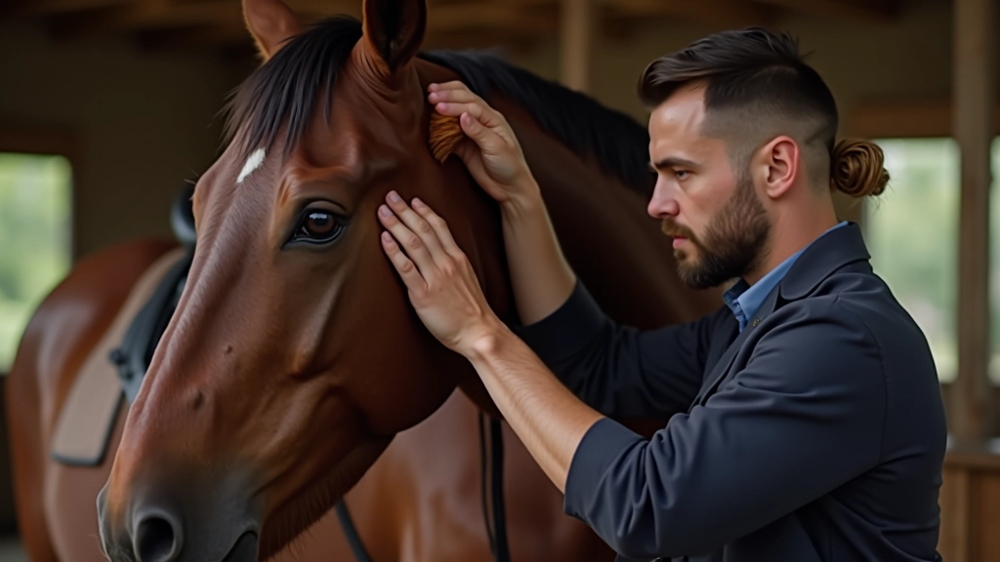
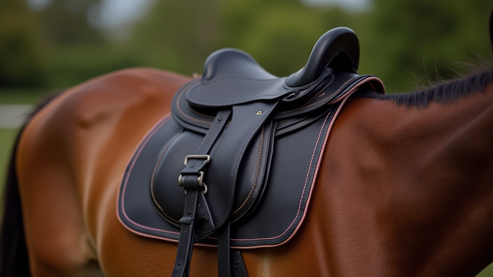
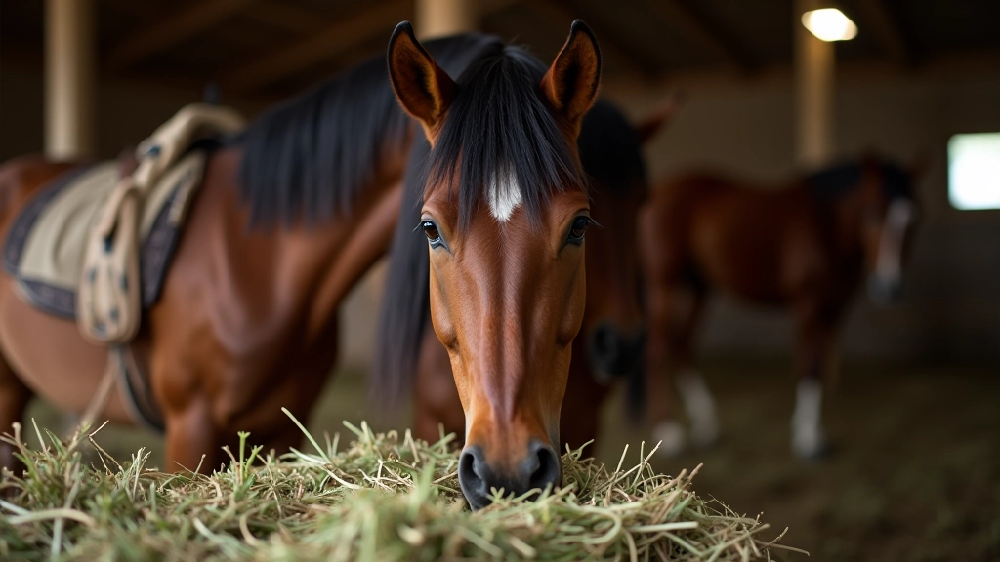

برنامج أساسيات العناية بالحصان
برنامج تدريبي شامل يغطي المهارات الأساسية للعناية اليومية. تتعلم التنظيف الصحيح، فحص الحوافر، والعناية بالجلد والمعطف. الجلسات تُقدم على شكل ورش عملية مباشرة حيث تتدرب على الخيول الفعلية تحت إشراف مختص.
اعرف المزيدبرامج تدريبية عملية متخصصة في العناية بالخيول وفنون الفروسية
برنامج تدريبي شامل يغطي المهارات الأساسية للعناية اليومية. تتعلم التنظيف الصحيح، فحص الحوافر، والعناية بالجلد والمعطف. الجلسات تُقدم على شكل ورش عملية مباشرة حيث تتدرب على الخيول الفعلية تحت إشراف مختص.
اعرف المزيدجلسات متخصصة في فهم أنواع السروج المختلفة وكيفية اختيار الملاءمة الصحيحة لكل حصان. تتعلم كيفية قياس وتقييم الملاءمة، وضبط السرج لتحقيق راحة الفارس والحصان معاً. تشمل تحليل علامات المشاكل الشائعة وكيفية تصحيحها.
اعرف المزيددليل عملي يتناول احتياجات التغذية السليمة والمتوازنة للخيول. تتعرف على اختيار العلف والحبوب المناسبة، وكيفية تعديل النظام الغذائي حسب النشاط والعمر والحالة الصحية. يشمل معرفة العلامات الدالة على المشاكل الغذائية.
اعرف المزيدتعريف شامل بالأدوات الأساسية المستخدمة في العناية اليومية بالخيول. تتعلم اختيار الأدوات الصحيحة، طرق استخدامها بكفاءة، والعناية بها للحفاظ على جودتها. تغطي الفرش، المشاط، أدوات تنظيف الحوافر وغيرها.
اعرف المزيد


تواصل معنا لمعرفة المزيد عن البرامج التدريبية وكيفية الالتحاق بها. فريقنا هنا للإجابة على جميع أسئلتك.
اتصل بنا الآن